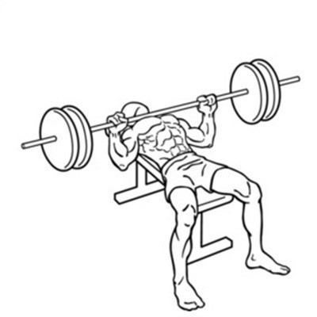

벤치프레스 (Bench Press)
스쿼트, 데드리프트와 함께 웨이트 트레이닝을 대표하는 3대 운동 중 하나다. 그 중에서 벤치 프레스는 근력 운동을 해본 적 없는 사람들도 알고 있는 가장 대표적인 운동으로서, 가슴 위의 상체를 종합적으로 강화시키는 효과를 준다.
주의할 점
올바르게 요령을 숙지하지 않은 상태에서, 혹은 운동을 하지 않던 상태에서 처음부터 운동 효과를 보겠다는 욕심으로 무거운 역기를 들다가 사고를 당하는 경우가 종종 있으므로 유의가 필요하다. 실제로 벤치 프레스를 하면서, 자신에게 맞지 않는 중량을 들던 사람이 무게를 이기지 못하고 바에 목이 눌려 질식해 사망하거나 호흡곤란을 겪는 사고가 상당히 많다.
벤치 프레스하는 방법